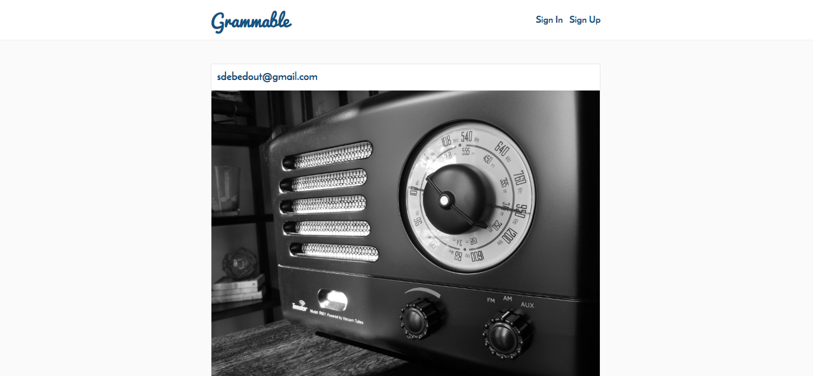

Opuene Junior Fiberesima
Full Stack Web Developer
Opuene Fiberesima is a business analyst who is learning code to understand how requirements are translated to product. In his previous life he worked at enterprise rent a car, producing amazing customer service and selling additional products.
Code Snippets
Temperature Conversion
This Ruby program will prompt the user for a temperature in degrees Celcius and let the user know what the corresponding temperature is in Fahrenheit.
puts "Enter the Degree in c:"
c = gets.chomp
c_int = c.to_i()
c_in_f = ( c_int * (9 / 5)) + 32
answer = "#{c} in farenheit is #{c_in_f}"
puts answer;
def ordinal(n)
ending = case n % 100
when 11, 12, 13 then 'th'
else
case n % 10
when 1 then 'st'
when 2 then 'nd'
when 3 then 'rd'
else 'th'
end
end
"This is #{n}#{ending} item"
end
ordinal(1) # => "This is 1st item"
ordinal(10) # => "This is 10th item"
ordinal(12) # => "This is 12th item"
ordinal(15) # => "This is 15th item"
ordinal(112) # => "This is 112th item"
ordinal(123) # => "This is 123rd item"
Ordinal Challenge
This Ruby program will convert a plain number to the ordinal of the number. So for example, if the user enters 2, it will display 2nd, if the user enters 3, it will display 3rd, etc.
Foobar
This Ruby program is an adaptation of a classic technical interview problem which displays sequences of the Foobar pattern.
puts "FooBar!"
puts "List numbers in order."
puts "If divisible by 3, write Foo."
puts "If divisible by 5, write Bar."
puts "If divisible by both 3 and 5, write Foobar."
puts "Choose total number to count up to:"
count = gets.chomp
while count.to_i != count.to_f || count.to_i == 0
puts "Error! Only enter whole numbers."
puts "No zeroes, words or fractions allowed. Try again."
count = gets.chomp
end
def div_by_3(num)
num % 3
end
def div_by_5(num)
num % 5
end
def div_by_3_and_5(num)
num % 15
end
n = 1
while n <= count.to_i
if div_by_3_and_5(n) == 0
puts "Foobar"
elsif div_by_3(n) == 0
puts "Foo"
elsif div_by_5(n) == 0
puts "Bar"
else
puts n
end
n += 1
end
Web Apps
Quote Generator

A database-powered quote generator with a mobile-first design, using the Ruby on Rails framework, HTML, and CSS. Uses Git and Github for version control, and launched on Heroku.
Yelp Clone

A Yelp clone that integrates with the Google Maps API
and includes features like user comments, star ratings,
image uploading, and user authentication.
Two-Sided Market Place

A two-sided, video-streaming marketplace platform that
features credit card payment capabilities, user role
management, complex user interfaces, and advanced
database relationships.
Test Driven Development

An Instagram clone that was built using industry-standard, test-driven
development following numerous red/green/refactor cycles.
Single Page Todo Application

This single-page to-do application features a
fluid user interface that– by using JavaScript–
allows users to rapidly add dynamic content.
Agile Team Project

Worked on an Agile software development team building
a chess application. Under the guidance of a senior software engineer,
we had weekly Agile team meetings for code reviews, sprint planning,
and feature assignments.
Opuene has developed proficiency and expertise in the following programming languages and comfort with the following tools.